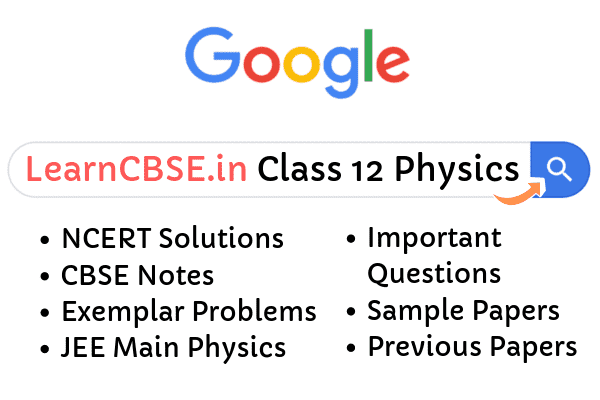

NCERT Solutions for Class 12 Physics consist of solved answers for all the chapters, exercise-wise. This is a great material for students who are preparing for the Class 12 exams. The solutions provided here are with respect to NCERT syllabus and curriculum. These materials are prepared by our expertise keeping on mind students learning the level.
NCERT textbooks are formulated by CBSE board. So all the students who are studying under this board have the best solution materials here. Class 12 is also an important class for students, as the level of education increases here. In this standard, students have opted for Maths or Biology as their main subject, have Physics and Chemistry subjects in common. Students have to be more focussed about their studies as this is the start of their future learning and career. Therefore, using these solutions students can really score good marks in their final exams.
All the solutions for all the chapters for Class 12 Physics subject have been arranged in a proper manner. Students can easily find answers for any question here which is mentioned in the textbook. These answers are in accordance with 2019-2020 syllabus. So students need not worry about the given content for the solutions. They have well prepared and structured solutions available here, by us.
NCERT solutions for 12th standard Physics subject covers the chapters which are present in the textbook Part 1 and Part 2, exercise-wise. The topics covered here are Electric charges and field, magnetism, electromagnetic induction, electromagnetic waves, alternating current, etc. The solutions for these chapters are available in PDF format, which students can download easily and learn them as per their convenience.
Class 12 Physics NCERT Solutions
The NCERT solutions for all the chapters of Class 12 Physics subject is given here. Students can click on the links of the particular chapter for which they are finding the solutions. All the questions are solved here with respect to the method and procedures explained in the textbook. The PDF for all the chapters are provided here, students can download them and learn offline as well.
- Chapter 1 Electric Charges And Fields
- Chapter 2 Electrostatic Potential And Capacitance
- Chapter 3 Current Electricity
- Chapter 4 Moving Charges And Magnetism
- Chapter 5 Magnetism And Matter
- Chapter 6 Electromagnetic Induction
- Chapter 7 Alternating Current
- Chapter 8 Electromagnetic Waves
- Chapter 9 Ray Optics and Optical Instruments
- Chapter 10 Wave Optics
- Chapter 11 Dual Nature Of Radiation And Matter
- Chapter 12 Atoms
- Chapter 13 Nuclei
- Chapter 14 Semiconductor Electronics Materials Devices And Simple Circuits
- Chapter 15 Communication Systems

Solving the questions present in the textbooks is not an easy task. It requires mathematical and logical skills to solve those problems with a lot of efforts. Class 12th Physics is a next level Physics, where students will learn a large variety of topics, which they are going to face in higher studies as well, such as in Class 12th.
More Resources for NCERT Solutions Class 12:
- NCERT Solutions
- Important Questions Class 12 Physics
- Physics Practicals Class 12 Manual
- HC Verma Concepts of Physics
Frequently Asked Questions:
How many chapters are there in class 12 physics?
There are 15 chapters in Class 12 Physics NCERT textbook.
Is NCERT Physics Textbook enough for Class 12 boards?
The NCERT textbook for physics for class 11 and 12 is more than enough for any kind of exam if it is studied properly and each numerical is solved with proper care. NCERT Physics textbooks are enough to score 90+ in 12th boards.
Class 12 Physics Chapter 1 Electric Charges and Fields
All of us have the experience of seeing a spark or hearing a crackle when we take off our synthetic clothes or sweater, particularly in dry weather. This is almost inevitable with ladies garments like a polyester saree. Another common example of electric discharge is the lightning that we see in the sky during thunderstorms. We also experience a sensation of an electric shock either while opening the door of a car or holding the iron bar of a bus after sliding from our seat. The reason for these experiences is the discharge of electric charges through our body, which was accumulated due to rubbing of insulating surfaces. You might have also heard that this is due to the generation of static electricity. This is precisely the topic we are going to discuss in this and the next chapter. Static means anything that does not move or change with time. Electrostatics deals with the study of forces, fields, and potentials arising from static charges.
Class 12 Physics Chapter 2 Electrostatic Potential and Capacitance
When an external force does work in taking a body from a point to another against a force like spring force or gravitational force, that work gets stored as the potential energy of the body. When the external force is removed, the body moves, gaining kinetic energy and losing an equal amount of potential energy. The sum of kinetic and potential energies is thus conserved. Forces of this kind are called conservative forces. Spring force and gravitational force are examples of conservative forces. Coulomb force between two (stationary) charges is also a conservative force. This is not surprising since both have inverse-square dependence on distance and differ mainly in the proportionality constants – the masses in the gravitational law are replaced by charges in Coulomb’s law. Thus, like the potential energy of a mass in a gravitational field, we can define the electrostatic potential energy of a charge in an electrostatic field.
Class 12 Physics Chapter 3 Current Electricity
Charges in motion constitute an electric current. Such currents occur naturally in many situations. Lightning is one such phenomenon in which charges flow from the clouds to the earth through the atmosphere, sometimes with disastrous results. The flow of charges in lightning is not steady, but in our everyday life, we see many devices where charges flow in a steady manner, like water flowing smoothly in a river. A torch and a cell-driven clock are examples of such devices. In the present chapter, we shall study some of the basic laws concerning steady electric currents.
Class 12 Physics Chapter 4 Moving Charges and Magnetism
In this chapter, we will see how magnetic field exerts forces on moving charged particles, like electrons, protons, and current-carrying wires. We shall also learn how currents produce magnetic fields. We shall see how particles can be accelerated to very high energies in a cyclotron. We shall study how currents and voltages are detected by a galvanometer. In this and subsequent Chapter on magnetism, we adopt the following convention: A current or a field (electric or magnetic) emerging out of the plane of the paper is depicted by a dot. A current or a field going into the plane of the paper is depicted by a cross.
Class 12 Physics Chapter 5 Magnetism And Matter
Magnetic phenomena are universal in nature. Vast, distant galaxies, the tiny invisible atoms, humans, and beasts all are permeated through and through with a host of magnetic fields from a variety of sources. The earth’s magnetism predates human evolution. In the previous chapter, we have learned that moving charges or electric currents produce magnetic fields. In the present chapter, we take a look at magnetism as a subject in its own right. The earth behaves as a magnet with the magnetic field pointing approximately from the geographic south to the north. When a bar magnet is freely suspended, it points in the north-south direction. The tip which points to the geographic north is called the north pole and the tip which points to the geographic south is called the south pole of the magnet.
Class 12 Physics Chapter 6 Electromagnetic Induction
The phenomenon of electromagnetic induction is not merely of theoretical or academic interest but also of practical utility. Imagine a world where there is no electricity – no electric lights, no trains, no telephones, and no personal computers. The pioneering experiments of Faraday and Henry have led directly to the development of modern-day generators and transformers. Today’s civilization owes its progress to a great extent to the discovery of electromagnetic induction.
Class 12 Physics Chapter 7 Alternating Current
The electric mains supply in our homes and offices is a voltage that varies like a sine function with time. Such a voltage is called alternating voltage (ac voltage) and the current driven by it in a circuit is called the alternating current (ac current)*. Today, most of the electrical devices we use require ac voltage. This is mainly because most of the electrical energy sold by power companies is transmitted and distributed as alternating current. The main reason for preferring use of ac voltage over dc voltage is that ac voltages can be easily and efficiently converted from one voltage to the other by means of transformers. Further, electrical energy can also be transmitted economically over long distances. AC circuits exhibit characteristics which are exploited in many devices of daily use. For example, whenever we tune our radio to a favorite station, we are taking advantage of a special property of ac circuits – one of many that you will study in this chapter.
Class 12 Physics Chapter 8 Electromagnetic Waves
We learned that an electric current produces the magnetic field and that two current-carrying wires exert a magnetic force on each other. Also, we have seen that a magnetic field changing with time gives rise to an electric field. James Clerk Maxwell (1831-1879), argued that this was indeed the case – not only electric current but also a time-varying electric field generates a magnetic field. While applying the Ampere’s circuital law to find a magnetic field at a point outside a capacitor connected to a time-varying current, Maxwell noticed an inconsistency in the Ampere’s circuital law. He suggested the existence of an additional current, called by him, the displacement current to remove this inconsistency.
Class 12 Physics Chapter 9 Ray Optics and Optical Instruments
In this chapter, we consider the phenomena of reflection, refraction, and dispersion of light, using the ray picture of light. Using the basic laws of reflection and refraction, we shall study the image formation by plane and spherical reflecting and refracting surfaces. We then go on to describe the construction and working of some important optical instruments, including the human eye.
Class 12 Physics Chapter 10 Wave Optics
In this chapter, we will first discuss the original formulation of the Huygens principle and derive the laws of reflection and refraction. We will also discuss the phenomenon of interference which is based on the principle of superposition. And we will discuss the phenomenon of diffraction which is based on HuygensFresnel principle. Finally, we will discuss the phenomenon of polarisation which is based on the fact that the light waves are transverse electromagnetic waves.
Class 12 Physics Chapter 11 Dual Nature of Radiation and Matter
It was found that certain metals, when irradiated by ultraviolet light, emitted negatively charged particles having small speeds. Also, certain metals when heated to high temperature were found to emit negatively charged particles. The value of e/m of these particles was found to be the same as that for cathode ray particles. These observations thus established that all these particles, although produced under different conditions, were identical in nature. J. J. Thomson, in 1897, named these particles like electrons and suggested that they were fundamental, universal constituents of matter.
Class 12 Physics Chapter 12 Atoms
Rutherford’s nuclear model was a major step towards how we see the atom today. However, it could not explain why atoms emit light of only discrete wavelengths. How could an atom as simple as hydrogen, consisting of a single electron and a single proton, emit a complex spectrum of specific wavelengths? In the classical picture of an atom, the electron revolves around the nucleus much like the way a planet revolves around the sun. However, we shall see that there are some serious difficulties in accepting such a model.
Class 12 Physics Chapter 13 Nuclei
In the previous chapter, we have learnt that in every atom, the positive charge and mass are densely concentrated at the centre of the atom forming its nucleus. The overall dimensions of a nucleus are much smaller than those of an atom. Experiments on the scattering of α-particles demonstrated that the radius of a nucleus was smaller than the radius of an atom by a factor of about 104. This means the volume of a nucleus is about 10-12 times the volume of the atom. In other words, an atom is almost empty. If an atom is enlarged to the size of a classroom, the nucleus would be of the size of a pinhead. Nevertheless
Class 12 Physics Chapter 14 Semiconductor Electronic: Material, Devices And Simple Circuits
In this chapter, we will introduce the basic concepts of semiconductor physics and discuss some semiconductor devices like junction diodes (a 2-electrode device) and bipolar junction transistor (a 3-electrode device). A few circuits illustrating their applications will also be described.
Class 12 Physics Chapter 15 Communication Systems
We all know that the three basic elements of communication include the transmitter, channel, and the receiver. This chapter explains the role of each element in details. It also talks about the bandwidth of signals, the bandwidth of transmission medium, the necessity of modulation, amplitude modulation, production and detection of amplitude modulated wave, propagation of electromagnetic waves, etc. After a thorough explanation of the topics, there are exercises to solve at the end of the chapter.
As we all know, 12th is the most important class for all the students, as after this they move to their college level. But you can get admission in a good recognized institute or university, only when you have scored the minimum qualifying marks. And it is only then, you will be able to get good jobs or get placed directly from campus recruitment, conducted by colleges. Therefore, it very necessary for you to build a strong base in Class 12 Physics subject and understand the concepts deeply.
To make it easier for them to learn, we are providing here solutions for all the students of 11th standard, such that, they can clarify their doubts for all types of questions. Below are the introductions for each chapter and links for all the exercises, read them thoroughly.